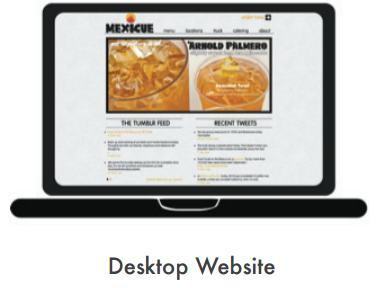
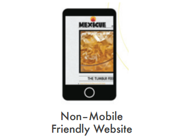

Mobile Websites
Having a website is crucial for business. So is being accessible anywhere. 57% of smartphone users search for local businesses on their device everyday. Have a professional mobile website that makes it easy for customers to find you on the go.
What is the difference between a regular site and a mobile optimized site?
A regular website is usually designed for viewing on a desktop computer. When viewed on a mobile device, the user experience isn't great. Buttons and text are smaller, navigating the site involves pinching and zooming the screen, and some elements might not work at all. A mobile-optimized site solves this problem by having thumb-friendly buttons and access to contact information and directions in just one click.

